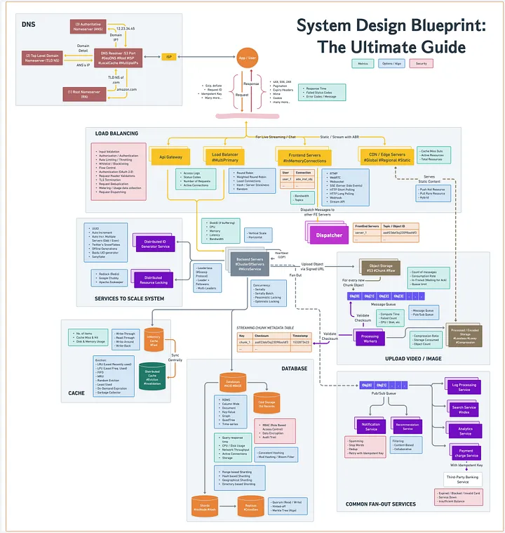
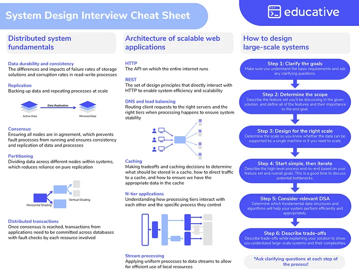
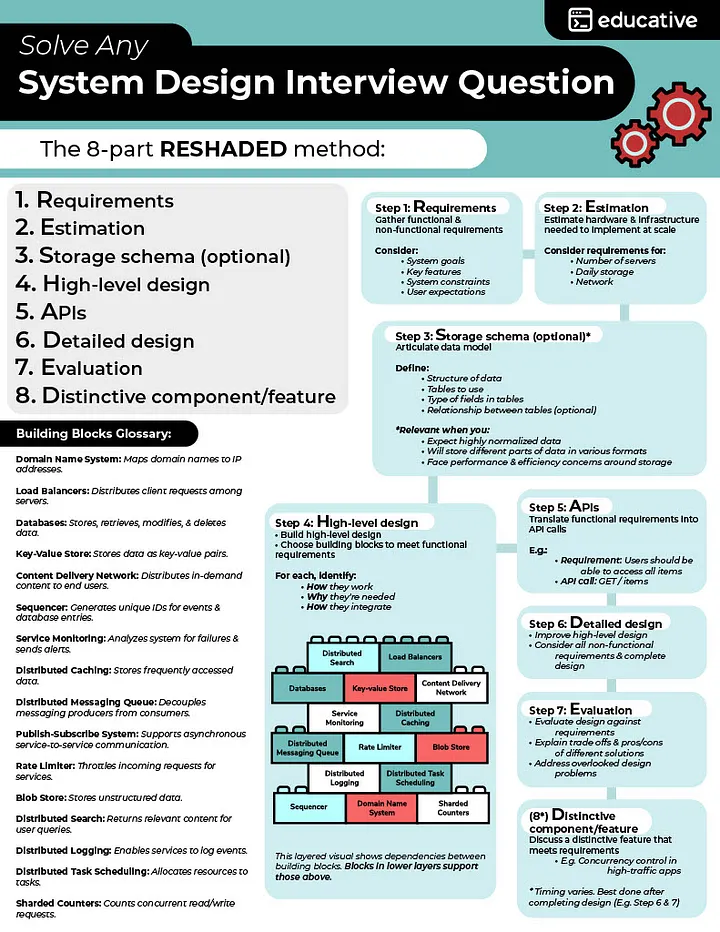
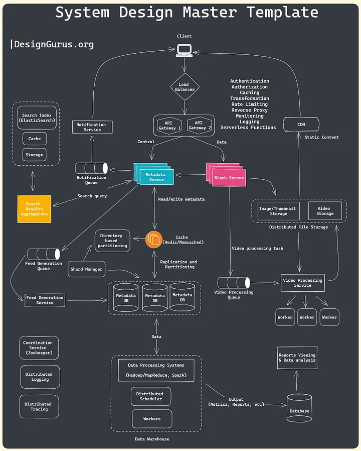
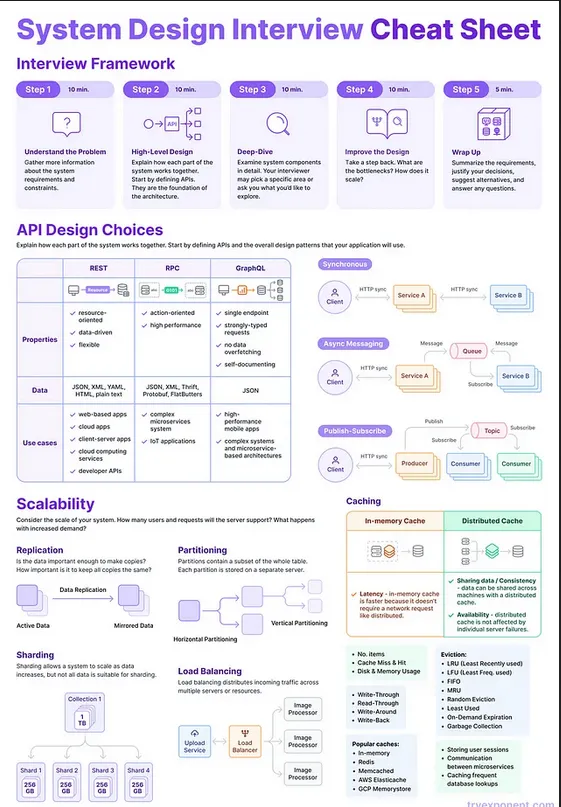

System Design Interview Core Information¶
System Design Concepts¶
For more details, see: Top 10 System Design Concepts Every Programmer Should Learn
- Scalability
- Availability
- Reliability
- Fault Tolerance
- Caching Strategyies
- Load Balancing
- Security
- Scalable Data Management
- Design Patterns
- Performance Optimization
1. Scalability¶
There are two main types of scalability: vertical scalability and horizontal scalability. * Vertical scalability involves adding more resources, such as CPU, memory, or storage, to a single server or node to handle increased workload. * Horizontal scalability, on the other hand, involves adding more servers or nodes to a system to distribute the workload and handle increased demand. Horizontal scalability is often achieved through techniques such as load balancing, sharding, partitioning, and distributed processing.
Achieving scalability requires careful system design, architecture, and implementation. It involves designing systems that can efficiently handle increasing workloads, efficiently utilize resources, minimize dependencies, and distribute processing across multiple nodes or servers.
Techniques such as caching, asynchronous processing, parallel processing, and distributed databases are often used to improve scalability. Testing and performance monitoring are also crucial to ensure that the system continues to perform well as it scales.
2. Availability¶
High availability is a critical requirement for many systems, especially those that are mission-critical or time-sensitive, such as online services, e-commerce websites, financial systems, and communication networks. Downtime in such systems can result in significant financial losses, reputational damage, and customer dissatisfaction. Therefore, ensuring high availability is a key consideration in system design.
Achieving high availability involves designing systems with redundancy, fault tolerance, and failover mechanisms to minimize the risk of downtime due to hardware failures, software failures, or other unexpected events.
In system design, various techniques and strategies are employed to improve availability, such as load balancing, clustering, replication, backup and recovery, monitoring, and proactive maintenance.
3. Reliability¶
Reliability refers to the consistency and dependability of a software system in delivering expected results. Building systems with reliable components, error handling mechanisms, and backup/recovery strategies is crucial for ensuring that the system functions as intended and produces accurate results.
High reliability is often desired in mission-critical applications, where system failures can have severe consequences, such as in aviation, healthcare, finance, and other safety-critical domains.
Reliability can be achieved through various techniques and strategies, such as redundancy, error detection and correction, fault tolerance, and robust design.
4. Fault Tolerance¶
Fault tolerance refers to the ability of a system or component to continue functioning correctly in the presence of faults or failures, such as hardware failures, software bugs, or other unforeseen issues. A fault-tolerant system is designed to detect, isolate, and recover from faults without experiencing complete failure or downtime.
There are various techniques and strategies for achieving fault tolerance, such as replication, where multiple copies of the same data or service are maintained in different locations, so that if one fails, others can take over; checkpointing, where system states are periodically saved, so that in case of failure, the system can be restored to a previously known good state; and graceful degradation, where the system can continue to operate with reduced functionality in the presence of failures.
5. Caching Strategies¶
Caching strategies are techniques used to optimize the performance of systems by storing frequently accessed data or results in a temporary storage location, called a cache, so that it can be quickly retrieved without needing to be recalculated or fetched from the original source. There are several common caching strategies used in system design:
- Full Caching
-
In this strategy, the entire data set or results are cached in the cache, providing fast access to all the data or results. This strategy is useful when the data or results are relatively small in size and can be easily stored in memory or a local cache.
-
Partial Caching
-
In this strategy, only a subset of the data or results are cached, typically based on usage patterns or frequently accessed data. This strategy is useful when the data or results are large in size or when not all the data or results are frequently accessed, and it is not feasible to cache the entire data set.
-
Time-based Expiration
-
In this strategy, the data or results are cached for a specific duration of time, after which the cache is considered stale, and the data or results are fetched from the original source and updated in the cache. This strategy is useful when the data or results are relatively stable and do not change frequently.
-
LRU (Least Recently Used) or LFU (Least Frequently Used) Replacement Policy
-
In these strategies, the data or results that are least recently used or least frequently used are evicted from the cache to make room for new data or results. These strategies are useful when the cache has limited storage capacity and needs to evict less frequently accessed data to accommodate new data.
-
Write-through or Write-behind Caching
-
In these strategies, the data or results are written to both the cache and the original source (write-through) or only to the cache (write-behind) when updated or inserted. These strategies are useful when the system needs to maintain consistency between the cache and the original source or when the original source cannot be directly updated.
-
Distributed Caching
-
In this strategy, the cache is distributed across multiple nodes or servers, typically using a distributed caching framework or technology. This strategy is useful when the system is distributed or scaled across multiple nodes or servers and needs to maintain consistency and performance across the distributed cache.
-
Custom Caching
- Custom caching strategies can be implemented based on the specific requirements and characteristics of the system or application. These strategies may involve combinations of the above-mentioned strategies or other custom approaches to suit the unique needs of the system.
The selection of the appropriate caching strategy depends on various factors such as the size of data or results, frequency of access, volatility of data or results, storage capacity, consistency requirements, and performance goals of the system. Careful consideration and implementation of caching strategies can significantly improve system performance, reduce resource utilization, improve scalability, and enhance user experience.
6. Load Balancing¶
Load balancing is a technique used in distributed systems or networks to distribute incoming network traffic or workload evenly across multiple servers or resources, ensuring that no single server or resource is overwhelmed with excessive traffic or workload.
Load balancing can be achieved through various algorithms or methods, such as:
- Round Robin: Incoming requests are distributed sequentially to each server or resource in a rotating manner, ensuring an equal distribution of traffic across all servers or resources
- Least Connection: Incoming requests are distributed to the server or resource with the least number of active connections, ensuring that the server or resource with the least load receives new requests.
- Source IP Affinity: Incoming requests from the same client IP address are directed to the same server or resource, ensuring that requests from a specific client are consistently handled by the same server or resource.
- Weighted Round Robin: Incoming requests are distributed based on predefined weights assigned to each server or resource, allowing for different traffic distribution ratios based on server or resource capacity or capability.
- Adaptive Load Balancing: Load balancing algorithms dynamically adjust the distribution of traffic based on real-time monitoring of server or resource health, performance, or other metrics, ensuring optimal resource utilization and system performance.
Load balancing can be implemented using hardware-based load balancers, software-based load balancers, or cloud-based load balancing services. It plays a critical role in distributed systems or networks with high traffic loads or resource-intensive workloads, enabling efficient utilization of resources, enhancing system availability and reliability, and providing seamless user experience.
7. Security¶
Security in system design refers to the consideration and implementation of measures to protect a system from potential security threats, vulnerabilities, or attacks. It involves designing and implementing systems with built-in security features and practices to safeguard against unauthorized access, data breaches, data leaks, malware attacks, and other security risks.
Security in system design typically involves the following principles:
- Authentication: Ensuring that users or entities are verified and granted appropriate access privileges based on their identity and credentials.
- Authorization: Enforcing access controls and permissions to restrict users or entities from accessing unauthorized resources or performing unauthorized actions.
- Encryption: Protecting sensitive data by using encryption techniques to prevent unauthorized access or data breaches.
- Auditing and Logging: Implementing mechanisms to track and log system activities and events for monitoring, auditing, and forensic purposes.
- Input Validation: Validating and sanitizing all input data to prevent common security vulnerabilities such as SQL injection, cross-site scripting (XSS), and cross-site request forgery (CSRF) attacks.
- Patching and Updates: Keeping the system up-to-date with the latest security patches and updates to address known security vulnerabilities.
- Defense in Depth: Implementing multiple layers of security controls, such as firewalls, intrusion detection systems, and antivirus software, to provide a multi-tiered defense against security threats.
- Principle of Least Privilege: Limiting users or entities’ access privileges to the minimum necessary to perform their tasks, reducing the potential impact of a security breach or attack.
- Secure Communication: Using secure communication protocols, such as HTTPS or SSL/TLS, to protect data in transit from interception or eavesdropping.
8. Scalable Data Management¶
Scalable data management refers to the ability of a system or application to effectively handle growing amounts of data without experiencing performance degradation or loss of functionality. It involves designing and implementing data management practices and technologies that can handle increasing data volumes, user loads, and processing requirements, while maintaining acceptable levels of performance and reliability.
Scalable data management typically involves the following principles:
- Data Partitioning: Splitting large datasets into smaller, manageable chunks or partitions to distribute the data across multiple storage or processing resources. This helps in reducing the load on individual resources and allows for parallel processing and improved performance.
- Distributed Database Systems: Using distributed databases or data storage solutions that can distribute data across multiple nodes or servers, enabling horizontal scaling and improved performance.
- Data Replication: Replicating data across multiple nodes or servers to ensure data availability and fault tolerance. This can involve techniques such as data mirroring, data sharding, or data caching to improve performance and reliability.
- Caching and In-Memory Data Storage: Caching frequently accessed data or storing data in memory for faster retrieval and processing, reducing the need for expensive disk I/O operations and improving performance.
- Indexing and Query Optimization: Using efficient indexing and query optimization techniques to speed up data retrieval and processing operations, especially in large datasets.
- Data Compression: Implementing data compression techniques to reduce the storage footprint and improve data transfer efficiency, especially for large datasets.
- Data Archiving and Purging: Implementing data archiving and purging practices to remove or archive old or infrequently accessed data, reducing the storage and processing overhead and improving performance.
- Scalable Data Processing Frameworks: Using scalable data processing frameworks such as Apache Hadoop, Apache Spark, or Apache Flink, that can handle large-scale data processing and analytics tasks in a distributed and parallelized manner.
- Cloud-based Data Management: Leveraging cloud-based data management services, such as Amazon S3, Amazon RDS, or Google Bigtable, that provide scalable and managed data storage and processing capabilities.
- Monitoring and Scalability Testing: Regularly monitoring system performance and conducting scalability testing to identify and address performance bottlenecks, resource limitations, or other scalability challenges, and ensuring that the data management practices can effectively handle increasing data volumes and loads.
9. Design Patterns¶
Design patterns in system design can be categorized into various types, including:
- Creational Patterns: These patterns focus on object creation mechanisms and provide ways to create objects in a flexible and reusable manner. Examples of creational patterns include Singleton, Factory Method, Abstract Factory, Builder, and Prototype patterns.
- Structural Patterns: These patterns focus on the organization of classes and objects to form a larger structure or system. Examples of structural patterns include Adapter, Bridge, Composite, Decorator, and Facade patterns.
- Behavioral Patterns: These patterns focus on the interaction and communication between objects or components within a system. Examples of behavioral patterns include Observer, Strategy, Command, Iterator, and Template Method patterns.
- Architectural Patterns: These patterns provide high-level guidelines and strategies for designing the overall architecture of a system. Examples of architectural patterns include Model-View-Controller (MVC), Model-View-ViewModel (MVVM), Layered architecture, Microservices, and Event-Driven architecture patterns.
10. Performance¶
System designers need to consider various performance-related factors during the design process, such as choosing appropriate algorithms and data structures, optimizing code, minimizing unnecessary overheads, managing system resources efficiently, and ensuring proper system configuration and tuning. Performance testing and profiling techniques can also be used to identify and address performance bottlenecks and optimize system performance.
Optimizing performance in system design requires a careful balance between functionality, complexity, and resource utilization. It involves making informed design decisions, using best practices, and continuously monitoring and optimizing system performance to ensure that the system meets its performance requirements and delivers a smooth and efficient user experience.
System Design Cheat Sheets¶
- From Medium - System Design Blueprint I

- From Educative

- From Educative

- From DesignGuru

- From Exponent
